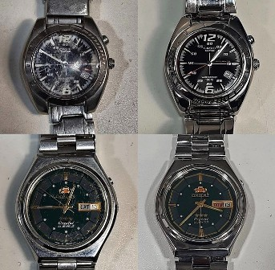
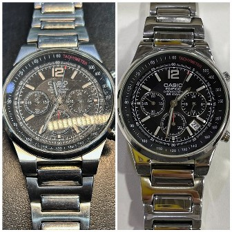
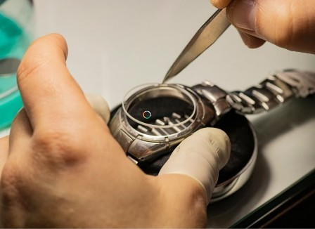

Репассаж - це профілактика годиника, до неї входить:
технічний огляд агрегату, розбір,
чистка або заміна елементів конструкції, змащування.
Репассаж механічних годинників
Найчастіше виробники радять здійснювати репассаж раз в 2 - 3 роки. Зазвичай цей термін вказано в поданній інструкції. Також визначити реальну потребу репассажа можна, відштовхуючись від фактичного стану механізму і від умов експлуатації аксесуара.


Репассаж механічних годинників з автопідзаводом
Автоматичний годинник — це унікальне поєднання технологій та стилю. Для того, щоб вони працювали справно і довго радували власника, необхідно правильно їх носити та своєчасно доглядати механізм. Регулярне технічне обслуговування є ключовим фактором довговічності автоматичного годинника. Важливо вибрати надійну майстерню, яка спеціалізується на ремонті та обслуговуванні механічного годинника.


Репассаж кварцевих годинників
Винахід кварцових механізмів змінило годинну історію. Їх представила публіці компанія Seiko чотири десятиліття тому. Після цього зникла потреба заводити годинник щодня. За їх точний хід і виконання інших функцій відповідає батарея. Зазвичай її харчування вистачає мінімум на рік.Якщо годинник почаав йти неадекватно по швидкості, електронний екран став більш бляклим або вони зупинилися - тоді самий час звертатися в майстерню.


Полірування корпусу
Годинники допомагають доповнити імідж і статус людини в суспільстві. Тому вони повинні завжди виглядати презентабельно. Ми видалимо будь-які різновиди нерівностей. Очистимо поверхню від пилу і бруду. Відновимо зовнішній вигляд агрегату.
Полірування скла
При виконанні полірування наручних годинників користуємось виключно сучасними якісними інструментами і спеціальними ефективними засобами.
Заміна ремінців
Важлива складова комфорту - якісний годинний ремінець. Традиційні шкіряні ремені живуть, в середньому, близько року. Після цього він починає тріскатися і затирається, втрачати форму, накопичувати бактерії і виглядати непрезентабельно. Крім того, будь-які аксесуари рекомендується знімати на ніч, щоб рука від них відпочила. В процесі застібання-розстібання годинний ремінь теж страждає. Тому заміна ремінця на годиннику - затребувана і часта послуга.

Заміна скла в годинниках
Найкрихкіший і схильний до пошкоджень елемент годин - їх скло. Порушення герметичності, забруднення може спричинити серйозний ремонт і вивести механізм з ладу. Тому розумним рішенням буде вчасно міняти пошкоджений елемент.
